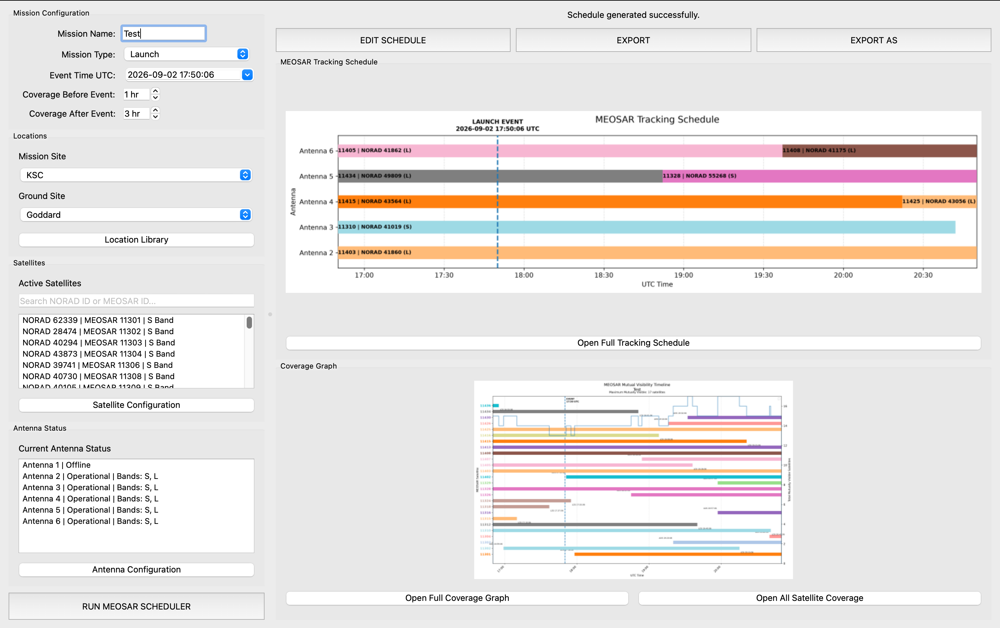

SOFTWARE · AEROSPACE · SYSTEMS
MEOSAR Mission Scheduler
A Python-based mission scheduling application designed to analyze satellite visibility, antenna availability, and mission events for MEOSAR operations.
The application combines satellite data, visibility calculations, antenna constraints, and scheduling logic into a graphical interface for mission planning.
Technologies: Python, PyQt6, Skyfield, CelesTrak TLE Data
The MEOSAR Mission Scheduler is a proprietary application developed for NASA's Search and Rescue program. It is not publicly available.